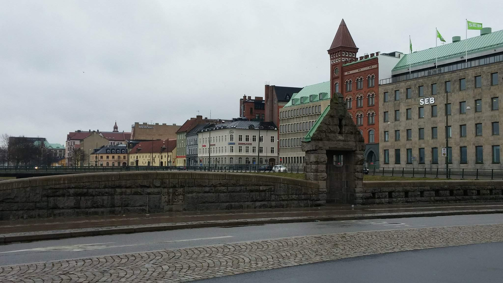
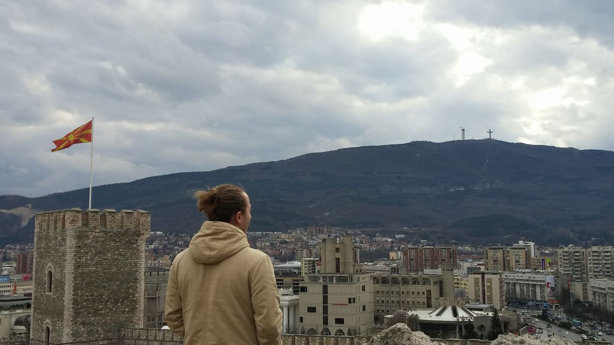

Welcome to my website!
If you think I should start my own vlog, click here !
One of the things that I enjoy the most in live is Traveling! From the early childhood, my dream was to visit all the places in the world and this dream still keeps me going. For the last 3 years I managed to visit around 10 countries on two continents and this is just a part of my overall traveling experience. I decided to share below two of my most memorable adventures...
SWEDEN
I visited Malmo in Spring 2017 on my way to Macedonia. The thing is that on my way from Vilnius to Skopje, I had a layover of 12 hours in Malmo's airport and me and my girlfriend decided to use our time smartly and instead of dying from boredom in the airport, to explore one more beautiful city. However, we forgot that while preparing for the trip to Macedonia we left all the warm clothes home (assuming that is going to be warm in Skopje) and now we had to walk and freeze on -3 C all day! Ohh.. I remember it was very cold and veeeeery windy! Of course we tried to improvise and dressed several liars of different T-shirts and sweaters, but unfortunately that did not save us from cruel Swedish weather. The begging sounds a bit sad, but we actually had a great time after. As soon as we arrived in the old town from the airport we forgot about how cold it was ! The city was so beautiful and it had so much to offer that we could not stay in one place. So for the next 12 hours we were constantly walking and exploring the beauty of Malmo (with the exception of some stops for food and coffee). By the end of the day we managed to see everything we had to (Art Gallery, History Museum, Malmo Castle, etc.) and spend a quality time! If you ever have a layover of 10+ hours in Malmo, I would definitely recommend to go for a walk!
MACEDONIA
I got to visit Macedonia in Spring 2017 as well and it was the 3rd country that I have visited on Balkans. Trip to Macedonia was very memorable for several reasons, but one of the main reason why it was so special- because it was unexpected. Prior to booking tickets to Macedonia, me and my girlfriend were planning for several weeks our trip to Talin and Helsinki,because this was the initial plan. Now two of my girlfriend's friends came to visit us in Lithuania and we arranged on weekend to go to Ryga. Then, one evening we were sitting at the table and talking, and one of the friends (she studies in Greece) was confused why would we want to go somewhere, where it is the same cold as in Lithuania. Then she proposed to visit her in Greece, whenever we have a chance, because we could have an opportunity to warm our bones. Suddenly, one of the girls (don't remember which one) suggested to just take a look at the tickets, with the thought that maybe it is possible to find some cheap connections. And guess what :D After about 20 minutes playing with different connections we booked our tickets to Greece (through Macedonia). I hope this was not very confusing. We went to Macedonia, when the final destination was Greece! And yeah coming back to Macedonia, I spent a very nice time there, tried tasty food, saw beautiful places, met my girlfriend's mom and most important - I went up on a mountain for the first time in my life ! P.S: unexpected trips - are the best trips!